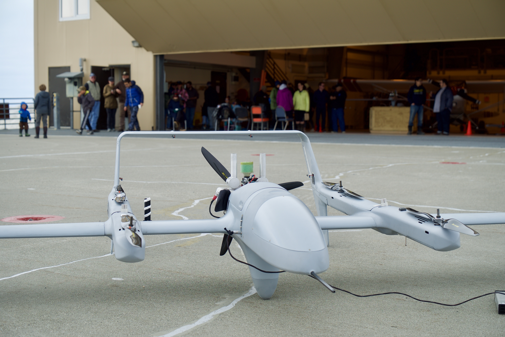
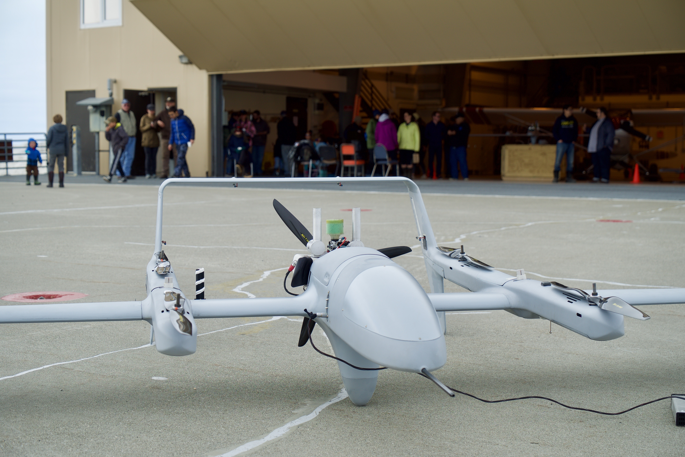

Roswell L. Schaeffer Sr.

Roswell was born and raised in Kotzebue, Alaska. His parents were John and Annie Schaeffer Sr. He graduated from Copper Valley High School in 1966 and from the University of Alaska Fairbanks in 1973 with a degree in Sociology with an emphasis on social work. He was a magistrate and acting District Court Judge from 1973 to 1981 and served a 2-year term as NANA President. He also served as Northwest Arctic Borough Mayor for two 3-year terms.
He hunted, trapped and commercially fished throughout these years. His hunting included sea mammals, land mammals and birds all year round. He has spent a lot of time studying the ice conditions of Kotzebue Sound and behavior of all animals he hunted and trapped. He was the Chairman of the Alaska Beluga Whale Committee for 10 years.
He is married to Millie Smith Schaeffer of Kotzebue. They raised 3 children, have 4 grandchildren, and 4 great-grandchildren. He taught all his children to hunt within the realm of native spirituality and respect.
He is now retired and spends most of his time hunting, trapping and creating native art.
Cyrus Harris

Cyrus is a lifelong coastal Alaskan, living mostly at Sisualik, about 12 miles across the bay from Kotzebue. He learned from a young age the importance of keeping track of the ice when the weather changed and how and when the ice is taken out. His people rely heavily on caribou, fish, waterfoul, and especially sea mammals. He hunts for bearded seal, ring seal and spotted seal, which requires that he studies and keeps track of the sea ice when it's first forming in fall time, during the winter months for overflow, when land fast ice is created, and when the nearest leads are created for seal hunting.
Cyrus runs Maniilaq Association's Hunter Support Program, which provides fish and game to elders. He also helped to establish a traditional food donation center and food storage facility called the Siġḷauq. Not only does he hunt, gather and fish for his family, but he also supplies this program with a lot of it's subsistence foods, which keeps him very active in activities across Kotzebue Sound throughout the year by boat, dog team, and snow-machine.
He is also involved in the Western Arctic Caribou Herd Working Group, the Alaska Beluga Whale Committee, the Inuit Circumpolar Council-Alaska, and with Alaska Fish and Game Advisory Committee.
Robert (Bobby) Schaeffer

Robert was born in Kotzebue, 1949, and has lived in and near Kotzebue his entire life. From a young age, he learned about the environment from his dad and other elders. He grew up hunting, fishing and trapping. He has spent a lot of time on the waters and ice of Kotzebue Sound, fishing commercially and observing the fish, animals and sea ice physics. He holds a U.S. Coast Guard 25 gross ton masters license. He has been involved with marine-based research with the Native Village of Kotzebue for many years and has conctracted under State, Federal, and private marine mapping and other oceanography research projects. He is currently Chairman for the Native Village of Kotzebue Tribal Council.
John Goodwin

John is an Alaska Native hunter who has lived in the Kotzebue area for more than 50 years and has spent his entire life learning about the ocean and the marine mammals of the Kotzebue Sound area. He is familiar with currents, weather conditions, ice conditions, and water depths in Kotzebue Sound. John is an experienced commercial salmon fisherman and marine mammal hunter. John holds a U.S. Coast Guard 25 gross ton masters License. He served as Chairman of the Alaska Ice Seal Committee from 2008-2017 and participated in catching and tagging bearded, spotted and ringed seals in Kotzebue Sound 2004-2015, and has participated in various Kotzebue Sound ecology projects since 2002 with the Native Village of Kotzebue.